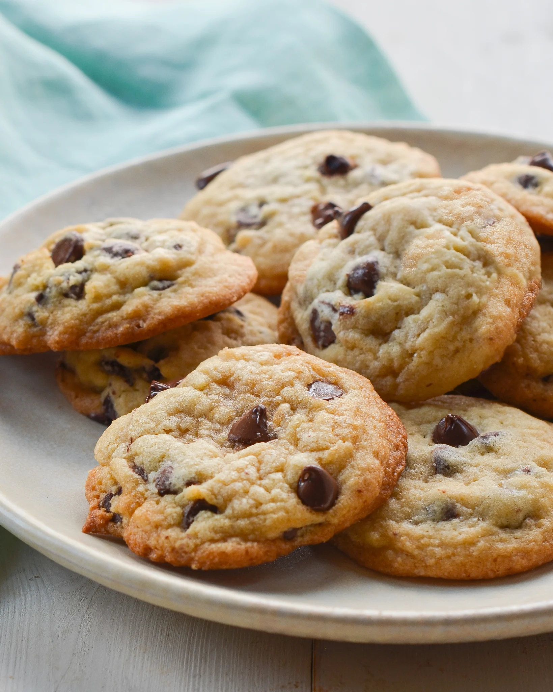

Chocolate chip cookies

How to make chocolate chip cookies
These classic chocolate chip cookies are crispy on the edges, chewy in the middle, and packed with gooey chocolate chips. A simple recipe that’s perfect for any occasion.
Ingredients
- All-purpose flour
- Baking soda
- Salt
- Unsalted butter
- Granulated sugar
- Brown sugar
- Vanilla extract
- Eggs
- Chocolate chips
Steps
- Preheat the oven to 375°F (190°C) and line a baking sheet with parchment paper.
- Mix flour, baking soda, and salt in a bowl.
- In another bowl, cream butter, granulated sugar, and brown sugar until smooth.
- Beat in eggs and vanilla extract, then gradually add the dry ingredients.
- Fold in chocolate chips.
- Drop spoonfuls of dough onto the baking sheet and bake for 8-10 minutes, or until edges are golden brown.